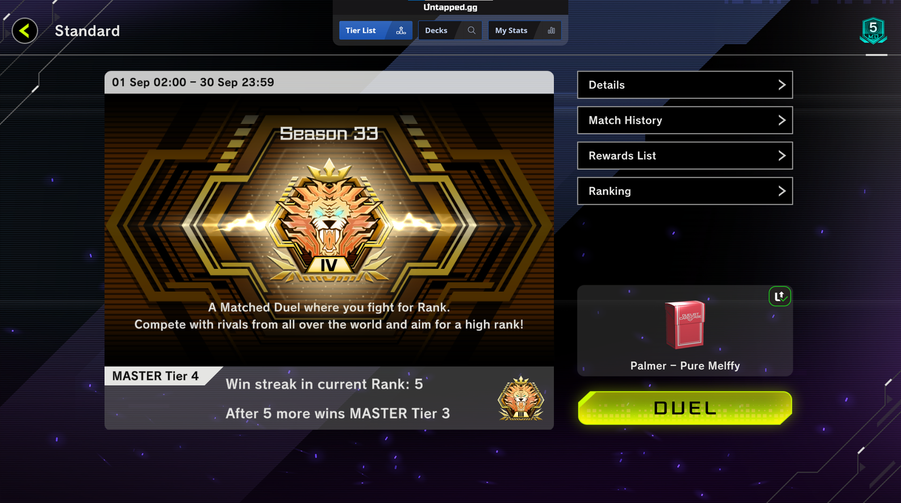
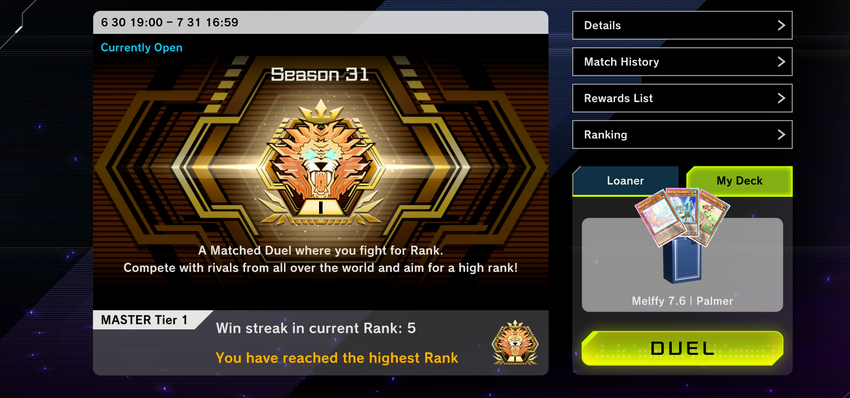

The Anti-Tenpai Era
Melffy Playhouse
Set Up Playhouse: Playhouse not only lets you bounce one card to your opponent's hand but also allows you to destroy a Spell/Trap, like the Tenpai Field Spell, as long as Bujinki is pointing to an XYZ on your end board.
Search Playhouse: You can search for Playhouse, preserving your resources to end on a Bujinki that's pointing at Forest.
Set Playhouse: Set Playhouse on the field.
Opponent's Turn Disruption: On your opponent's turn, you'll have multiple disruptive effects available:
- Activate the Melffy line to pop one card.
- Use Satellite Line to create an unaffected 5500/2500 monster that can pop up to three cards.
- Rely on Forest to permanently negate an attack or an effect.
- Bounce any one card back to your opponent's hand.
- Destroy one Spell/Trap on the field.
I'm back from short break!
I've been diving into the Disney Lorcana TCG with my kiddo and it's been an absolute blast! Big fan of the game!
That being said, I took a month long break from YGO and decayed to Platinum 5. It took me a few days to get back through Plat and Diamond but we've officially made it back to Master!
Believe it or not, I went through Diamond much faster than Plat. Probably because of so many weird lists vs Diamond where I saw a ton of more expected meta decks. Either way, glad to be close to M1 before the season is over after having skipped a month!
!!! Enigmaster Packbit !!!
Okay, this card is sick. We can use it in so many different manners to help extend our options.
First, it can be used turn 1 with Diva + Steed to end on Baronne + Packbit. If you have a Melffy in hand you can SS in end phase for the Melffy line + backrow 1 monster + omni from Baronne. Crazy line!!
Second, you can use it for good old fashioned problem card removal! Things like fusion Yubel, Princess, Flamberge, or any other card you really don't like popping with destruction to the GY. You can easily trigger this effect with Steed or Peropero GY effect to pop your own Packbit in battle phase, crushing lethal pushes.
Third, it can be a great tool for lethal! Synchro it off with another 2 body into Baron or Satellite, resummon Packbit back to the board, and 5900 on board at minimum. One Raccoon and it's OTK.
I really love the card and I'm saddened that I can't fit more cards in my extra deck. Choosing what cards to stick with in the ED will be a decision based on that day's ladder.
Finally made it!
This was, easily, the slowest month of ranked ladder ever.
I think that the people who were excited to try the "Global Ranking" stuff were in extra try hard / sweaty mode.
It took a TON of games and a lot of labbing to get to a spot where I felt solid.
HOWEVER - Now I feel great about my list.
It feels like one of the stronger vs the meta in a long, long time. Consistency is improved slightly with Steed.
Our lines are more various and less telegraphed.
KTW smokes SEFK, Yubel, Purrely, and any other decks that rely on low attack monsters as their engine.
Melffy Math - Testing "White Steed" and "Dragonoid Generator"
Assuming the decklist is something like:
Monsters:
- Melffy Wally x3 (starter)
- Melffy Catty x1
- Melffy Puppy x2 (weak starter)
- Melffy Fenny x1
- Melffy Pinny x1
- Melffy Pony x1
- Kalantosa x1
- Valerifawn x1
- Kittytail x1
- Hop Ear x1
- Peropero x1
- Alpha x1
- Rescue Cat x3 (Starter)
- White Steed x3 (1.5 card starter)
- Ash Blossom x3 (hand trap)
- Maxx C x3 (hand trap)
Spells:
- Melffy Hide and Seek x1
- Dragonoid Generator x3 (1.5 card starter)
- Called by x2
- Crossout x1
- Obedience Schooled x3 (starter)
Traps:
- Imperm x3 (Hand trap)
40 cards total.
The probability of drawing at least one "starter" of any kind in your opening hand of 5 cards is approximately 94.89%.
The probability of drawing at least one single "starter" card in your opening hand of 5 cards is approximately 81.95%.
White Steed (33.76% chance to have in hand):
When you DO have "White Steed" in your hand, the probability that at least one of the other four cards is a level 2 beast monster is approximately 89.23%.
Therefore, White Steed can be considered a 1.5 card starter. With 10 Melffy monsters: approximately 91.11%
Dragonoid Generator (33.76% chance to have in hand):
When you have "Dragonoid Generator" in your hand, the probability that at least one of the remaining four cards is a Melffy monster is approximately 66.68%.
With 10 Melffy monsters: approximately 71.12%
With 11 Melffy monsters: approximately 75.11%
With 12 Melffy monsters: approximately 78.66%
Okay so that means that if you run Generator at 2 its less bricky, more consistent while maintaining 93% starter consistency.
Generator at 1 with 11 Melffys:
Probability of drawing at least one starter card in your opening hand remains at 93.54%
Chance of having "Dragonoid Generator" in your opening hand has decreased to 12.5%
Probability that, when "Dragonoid Generator" is in your hand, at least one of the remaining four cards is a Melffy monster is approximately 75.11%. (11 Melffy total)
Generator at 2 with 10 Melffys:
Chance of having "Dragonoid Generator" in your opening hand: approximately 23.72%
Probability that, when "Dragonoid Generator" is in hand, at least one of the remaining four cards is a Melffy monster: approximately 71.12%
That still means generator at 3, even with the lower odds, is still statistically more effective but significantly less so than Steed in any capacity.
Effectiveness:
- Generator at 1 with 11 Melffys: 0.125 × 0.7511 = 0.09389 or 9.39%
- Generator at 2 with 10 Melffys: 0.2372 × 0.7112 = 0.16865 or 16.87%
- Generator at 3 with 9 Melffys: 0.3376 × 0.6668 = 0.2251 or 22.51%
9 Melffys with 3 Generators: Overall effectiveness (including "White Steed"): 53.26%
10 Melffys with 2 Generators: Overall effectiveness (including "White Steed"): 46.99%
11 Melffys with 1 Generator: Overall effectiveness (including "White Steed"): 38.78%
So yeah, 3x Gen, 3x Steed def best odds but you can drop Generator and still maintain great odds if you want to sub in 2 more tech cards.
In conclusion: Steed, very good. Generator, okay if you want more consistency through interruption. You can technically tech in Black Rose as well if you wanted since it creates usable level 1 tokens.
Vahram of the Floral Knights
Been testing some interactions lately. Running through about every even/odd level synchro ever printed seeing what interactions exist.
This is a really neat list because of the ability to extend plays.
Essentially, White Steed of the Floral Knights + one level 2 tuner = Vahram, the Magistus Divinity Dragon.
Then, when the opponent goes into battle phase you can banish your White Steed in GY to detonate Vahram. This is huge clear potential if you can get into it.
- You can also Accel Synchro as is the traditional method, just make sure you send Steed to the GY off of Kittytail or something to have the Vahram pop.
- You can also Hop Ear the White Steed body on your opponent's turn, maintaining the Satellite line AND having the on demand clear.
Testing New Ideas
I've been trying to make a lot of new cards work!
Currently testing:
- Stellar Wind Wolfrayet
- Psychic End Punisher
- Star Eater
Melffy Fenny
I've been really enjoying utilizing this card. Unfortunately, it adds bulk to the deck and I am forced to consider ratios more heavily.
Does adding 1x Fenny mean I can run 1x of every Melffy (except Wally at 2~3 still)? Is that crazy?
Tribrigade
I've been experimenting with a bit of Tri Brigade splash. Just one of each + 3 of Fraktall. This obviously changes the dynamic of our extra deck significantly but we can still maintain some of the stronger synchro removal tools. Is it more effective? It definitely plays through disruption better. It also makes Gamma much more attractive since the Tri-brig line is all off board.
The Era of Extensions
I've been seeing the most success covering my going second, leveraging cards with multiple functionalities like Evenly Matched and Lightning Storm. The ability to remove Front Row and/or Back Row with these cards give them a ton of value. Raigeki has been stellar to have in hand just about always.
I still do not blind second, I prefer to first. However, we are filled with board breakers instead of hand traps so 'bricking' going first you will probably lose harder than before. That being said, you will brick going first significantly less than you will play going second. That's just math.
More mid-range
Currently, I'm ranking up a second account so I'm encountering a lot of lesser skilled players and bots. As a result, I've removed Deep Beyond + AriPo + Zep from my list and added a bit more ED flexibility.
This list gives you more interactions on the opponents turn, albeit less significant ones. At the same time, however, you consume less resources per turn and stay high in card in hand value. Instead of Deep Beyonding and having to win on the next turn, this list generates advantage and holds it with less risk.
I like that the list has a ton of grind game potential AND innate protection from targeting via Spright. Great card, can do a lot of really cool stuff with it + Kittytail.
Avramax? Accesscode Talker? They're both really solid options and extremely easy for us to get into via Spright + S:P Little Knight. Either way, since the deck is a bit more midrange it's nice to have a "finisher".
Okay TOO many handtraps
I have pivoted to a more hybrid build now that I'm more familiar with the new cards, their combos, and overall mechanics. Still, it's a hard meta to Melffy in.
Currently we have a LOT of options. More than ever thanks to all the ED summons.
Open the Ghoti Garnet? NS and use it to make Forest or S:P still. Even then, you only lose 1 of the 3 major potential Synchro endboards we can cook up.
Need to get rid of two cards in hand? Locust into Omega takes two of the 6 starting cards right out of your opponent's hand. Some decks really cannot survive losing discard pieces (Purrely).
Need to dodge the Fire King effects and not let them pop forever? Ghoti Beyond.
We all know Satellite is an insane, unaffected, 5500/2500 with 3 pops line and we now have TWO different ways to get to it.
Vahram actually ended up being much stronger than expected, since the Fire King spells also die.
All in all, decision making will win games. Be patient with your resources and identify what the meta decks need for their combo lines. We are slowly getting more competent as an archetype. I truly feel we are one or two cards away from being in the rogue deck discussion.
We are Going Beyond the Deep
Say Hello to the Deep Beyond Line! She is our FireKing Salvation! Kind of....
Since the Snake Eye/Fire King meta is here and it is EXTREMELY strong going first.... we have to pivot. Instead of board breakers and going second follow up I've pivoted to a TON of handtraps to interrupt their going first.
Since Fire King cards activate from hand, field, AND graveyard we don't get the same value out of board removal the we used to. So, we pivot to banish and interruption.
The idea is that we lean on our heavy count of handtraps and disruption to prevent them from making their unbreakable board. It does too much and outvalues everyone. We have to cut off their ability to gather resources with cards that have more than 1 effect via things like Gamma, Veiler, and Imperm.
Card Thoughts
The opening lines have changed slightly for some of the starters. No longer have to blow your Satellite load and start your follow up turn with an empty hand.
Vahram gives a ton of flexibility while maintaining high threat. Consider swapping out if you find you need the space.
- For instance, if you don't want to drop Shuraig to fit Naturia Beast you can sub this card out.
- Mosquito is too good to sub out right now. It wins games solo.
- Naturia Beast is a must in this meta, imo. It also wins games solo.
- Ferrijit is amazing for extensions + she's the same size as S:P Little Knight which comes up a decent amount to be honest.
- The rest of the cards I consider legitimately fundamental and cannot be replaced. No joke, I'd replace Zeus before I subbed any of the other unlisted ED monsters out.
Kittytail / Naturia Beast / Peropero are all incredible cards in the current meta. Nat beast is an instant win vs Horus, Tearlaments, Despia, Purrely, etc. It's a very strong card vs Rescue Ace and Snake Eye as well. Notice how those are all the best decks? Run it!!
- I subbed out Kittytail for the time being because I'm afraid of losing Nat beast access by using the KT > Peropero to GY effect. Instead, I dropped KT and the Deep Sea Divas and added more tech cards. Kittytail still has an incredible effect. It might be worth running her regardless so that if you cannot Nat Beast turn 1, you can still preserve other options with the same cards in the deck.
- Naturia Beast is only really viable if you have Rcat or Peropero in hand. Still, if Rcat is your only option, then you don't want a naked Naturia Beast on board. It's basically GG at that point. ONLY naked Nat Beast if you have a Melffy to summon from hand to provide additional pressure / support the fragile Beast.
Desert Locusts offer a lot of maneuverability around things like S:P banish.
Hop Ear Squadron and Melffy Pinny are now both searched on the opening line, giving you options to get into Satellite from Vahram. Alternatively, you could use another body to get into Herald or Merry Melffys for more extensions.
Melffy Pony helps the grind game a lot. Early on adds a lot of impact with the Pinny recycle.
Hide and Seek now searched on first turn not only gives us destruction protection but also incredible follow up on recycle + draw 1.
Beating top tier decks via Time Out is a very viable strategy with this list.
The Mystical Beasts
So first thing is I have a video here where I talk about Kittytail specifically. It's a great card with a lot of flexibility. Check that out here: YouTube Video
Here's a shorter, less informative text breakdown, though!
- Kittytail:
- KT allows us to target a beast in the GY to toss Peropero Cerperus from deck to GY. Peropero banishes from GY to give us one pop of any card on field in any instance that we take damage at any point.
- KT, upon destruction, allows a search of any monster in your deck, including Maxx C!
- A lot of times a NS KT > ditch Peropero > crash into a monster in the battle phase > Pero effect to destroy said Monster > KT effect in GY to search any card (Alpha Beast, Maxx C, Kerass, Wally, etc etc)
- Can do cheeky plays like throw Pinny into GY to grab back with Pony on opponent turn and such.
- Kalantosa:
- The most straightforward of all the mystical beast cards. Anytime it is SS by a beast card (and not negated when doing so) it will destroy one card on the field.
- The most common play is Puppy effect on board to SS Kalantosa to destroy a card on the field.
- Ferrijit SS from hand, Valerifawn SS from GY, Joyous SS from GY are all other methods to get Kalantosa onto the board consistently for a pop.
- Valerifawn:
- As mentioned in the Kalantosa section, Valerifawn can discard any 1 card from the hand to SS a Lv2 or lower beast monster (Almost all of our deck) from the Graveyard.
- If you have Kalantosa, Kittytail, Kerass, etc in your GY you can get into some great 1 card extensions.
- Pure Melffy is about bodies on board. Any card that turns 1 summon into 2 bodies is HUGE for us. Especially on an opponent turn.
- Keep in mind, you HAVE to have a Lv2 or lower beast already in your GY for this card to work. You cannot rely on the discard being a beast card in your hand that you hope to resummon unless there's already a Lv2 beast in GY. This means that the card cannot be a starter, but is a very consistent extender.
- Valerifawn is a tuner! Rescue Cat can SS Valerifawn + Peropero from the deck to be a 1 card Naturia Beast which is VERY strong in the current format. If you do this play, you lose your KT GY value. Peropero is still in the GY from the Naturia Beast SS, though. You can use your Kittytail value to GY cards like Pinny in the hopes of grabbing them back with Pony on your opponent's turn.
Extra Deck Synchros
In terms of the Synchro Cards:
Melffy can very easily get into level 4, 6, 8, 10, 12 Synchro monsters on the enemy's turn. Since the Melffy monsters are all even leveled, it's hard to rely on anything other than even leveled Synchros.
First, let's understand our Synchro engine cards:
- Pinny:
- Any turn where a beast on the board has returned to your hand, Pinny can SS itself from the hand to the board. Then, Pinny will synchro using itself + however many Melffy you want from your hand to synchro into a monster.
- You can trigger this effect with more ways than just a Melffy returning to the hand, too! Things like Alpha Beast returning a beast to the hand, an opponent effect that bounces to hand (Like Ancient Warrior Link 2 or whatever), Merry Melffy bouncing something back to your own hand. This gives a lot of flexibility you don't initially expect.
- Hop Ear Squadron:
- SS itself to target a body on board and Synchro using it. Typically, we target a Level 2 body on board like Kalantosa after its effect has been used.
- This gives us an easy 2 card combo into things like Herald of the Arc Light (Omni negate + banish any cards send from hand/deck to gy) and Merry Melffys (Bounce one monster back to hand).
- Desert Locusts:
- Really neat card that gives us another Synchro summon off the Pinny effect. Requires an additional body on board to Synchro with. ALSO! Has a discard 1 card from hand effect for the person who is taking their turn. (Don't get into it on your own turn, lol)
- Let's say you have Wally on board at the start of your opponent's turn: Wally > Catty + Puppy > Catty + Puppy > Catty search Pinny, Puppy SS Kalantosa to pop one. Your hand is now Wally, Catty, Puppy, Pinny and your board is Kalantosa. You can Pinny effect, get into Desert Locusts, force the enemy to discard 1 card, and use Kalantosa to Synchro into any level 8 (Vahram, Accel, Stardust, etc)
- Accel Synchro Dragon (The Satellite Line):
- Is a level 8 card that allows us to SS a tuner from the GY (Pinny, typically) in order to SS Stardust > Satellite Warrior > Pop 3 cards on field.
- HUGE SLEEPER EFFECT: When you SS a monster using this method, it's unaffected. So many people try to banish my Satellite Warrior, kill it with destruction, etc. It's completely unaffected on your opponent's turn and usually has 5500 attack. Also, when Satellite Warrior dies he resummons Stardust and Accel from your graveyard. Huge line.
- So, with these two cards, we can easily do things like:
- Pinny > Desert Locusts, opponent discards 1 > Locusts Synchro to Accel > Accel into Satellite line > Pop 3 cards on field, 5500 unaffected monster.
- Pinny > Desert Locusts, opponent discards 1 > Locusts Synchro to Vahram (Whenever Vahram is destroyed, destroy all face up cards your opponent controls. You can crash it to clear entire endboards.)
Now, let's talk about the ED Synchro cards:
Keep in mind you don't NEED Locusts. You can just Pinny and use 4 melffy from hand to go into Accel. However, this leaves you with 0 resources in hand for follow up and only 2 pops on Satellite since you lose the extra body in the graveyard.
Essentially, the ED Synchro monsters are meant for either: A. Climbing higher into another synchro or B. Having direct interaction with opponent board (Vahram, Satellite, Icejade, Baron, etc).
So, you can really change things up if you find a synchro that has an effect that gives you some good game strength.
Staring Contest
Rabby + Staring contest is a great 2 card package if you're seeing a ton of Tearlaments.
Technically, you do not NEED Rabby, especially with the Pony inclusion.
You can search Staring Contest off the turn 1 line instead of Hide and Seek and just wait to use Pinny effect until MP2.
This does limit your line a bit without Rabby, though, who handles it all solo.
Extra Deck
ED space is so tight right now.
Hastorr actually goes insane against Rescue Ace and such but the niche opportunity has me defaulting to cards I expect to use more frequently.
Mosquito is something I can't replace and the Synchros are obviously mandatory.
rijit or Zeus or something but that really hurts our Kerass now that we don't even have Missus Radiant.
You could replace Vahram with something that achieves a similar effect.
Level 8 synchros that create some kind of board pressure are hyper consistent to get into.
Level 12 Synchros can even be achieved regularly with the Pony inclusion.
Tech Cards
The engine is so bulky in Pure Melffy that we are always strapped for tech space.
Evenly Matched is a must-have right now, in my opinion.
If you don't like the Thrust package you can sub it out (3x Thrust, 1x Harpie's, 1x Triple Tac) but it does get extensions into Obedience.
Droplet is really good, I swap it in when I go through sprees of not seeing Rescue Ace or other backline heavy decks.
Otherwise, I use Thrust + Harpie's for the Rescue Ace counter.
Pot of Avarice actually comes up a decent amount in the grind game but ultimately felt a little win more to me.
Consider adding 1 for Thrust package?
Idk Veiler / Imperm / Nibiru / Ghost Ogre / Skullmeister / etc etc - These can all be incorporated in the mentioned tech card slots or to replace your 'luxury starters'.
Luxury Starters
Currently my list has like an 85% chance of opening a 'starter' but that can be upped to 90%+ with the addition of 2~3 additional 'starters'.
If you want to add these, you will have to drop some of your tech pressure (Thrust package, usually).
Deep Sea Diva is a 1 card Melffy of the Forest, S:P, or Mosquito.
Treat it like a Nimble Beaver on your opening hand.
Pot of Prosperity is a solid 1 card addition you can consider a starter.
The ED banish is really tough, though.